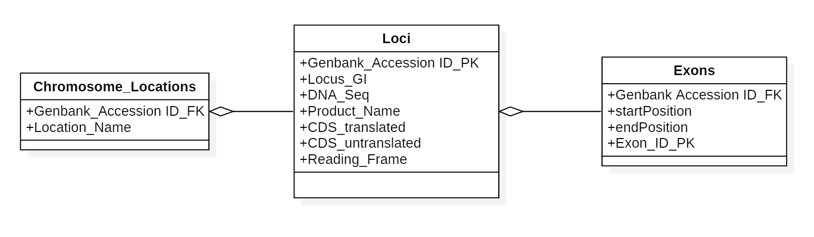

This script creates the database underpinning the "Explore Chromosome 17" website. The Database has three tables
Chromosome_Locations
Loci
Exons
The Locical Schema of the database in represented in the UML diagram below:

This version is for creating a database on a local machine. Changes had to be made to accommodate the limited permissions available on the Birkbeck server, for example the entire database cannot be dropped on the Birkbeck server so each table is dropped individually if they already exist in that version.
Database login information
Creates a database called Chromosome17 with the tables and fields:
Chromosomes_Locations
Genbank_Accession (FK)
Location_Name
Loci
Genbank_Accesssion (PK)
Locus_GI
DNA_seq
Product_Name
CDS_translated
CDS_untranslated
Reading_Frame
Exons
Genbank_Accession (FK)
StartPosition
EndPosition
Exon_ID (Auto increment)